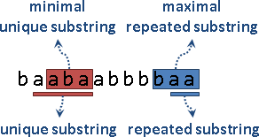
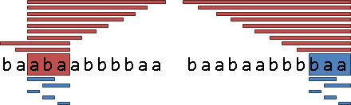
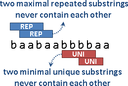
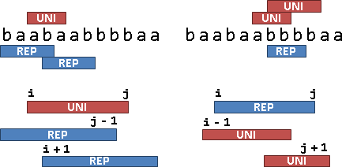
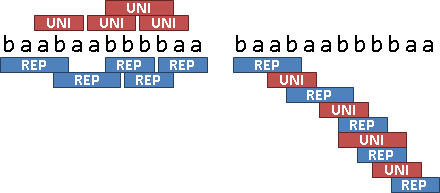

Longest Common Extension
程度★★ 難度★
Longest Common Extension
兩個字串，第一個字串從第i個字元開始，第二個字串從第j個字元開始，可以匹配到的最長字串，就是Longest Common Extension。
01234567
s1: aabbccc
s2: aabbbccc
LCE(0, 0) = aabb
LCE(2, 2) = bb
LCE(3, 4) = bccc
Longest Common Extension其實就是第一個字串的第i個後綴、第二個字串的第j個後綴，它們的Longest Common Prefix。
演算法（Suffix Array）
把兩個字串的全部後綴，一起排序。如果有大量的i與j需要計算，可以使用Range Minimum Query來查詢LCP Array的區間最小值。
時間複雜度為O(S+T)，S與T分別是兩個字串的長度。
演算法（Suffix Trie、Suffix Tree）
把兩個字串的全部後綴統統丟入Suffix Trie或Suffix Tree當中，從樹根往下逐字比對即可。如果有大量的i與j需要計算，可以改為求兩個後綴結尾節點的Lowest Common Ancestor。
時間複雜度為O(S+T)，S與T分別是兩個字串的長度。
Longest Common Substring
程度★★ 難度★
Longest Common Substring
「最長共同子字串」是指一群字串當中，每一個字串都有的子字串，其長度最長者。可能有許多個。
s1: aabbccc s2: aabbbccc s3: baabaccc s1 s2 s3 的 Longest Common Substring 就是 aab 與 ccc。
演算法（Suffix Array）
把全部字串的全部後綴，標記好是屬於哪一個字串，然後統統排序。排在一起的後綴們，如果涵蓋了每一種字串的後綴，那麼這些後綴的共同前綴，就是一個共同子字串。所有的共同子字串當中，找出最長者，即為最長共同子字串。
實作時可以用兩個指標，一前一後輪流移動，讓兩個指標所夾住之區間，持有每一種字串的後綴，以找出共同子字串。
實作時可以把字串銜接成一整串，並在字串之間插入從未出現過的字元，就能直接套用後綴陣列的演算法。然而重新銜接字串會花費不少時間和空間，因此也可以嘗試修改後綴陣列的演算法，避免重新銜接字串。
時間複雜度是O(N)，N是所有字串長度的總和。
【待補程式碼】
以下暫且提供未使用LCP Array的程式碼。
UVa 11107 11512 11855
Longest Repeated Substring
程度★★ 難度★
Longest Repeated Substring
「最長重覆子字串」是重複出現兩次以上的子字串當中，其長度最長者。可能有許多個。
子字串重複出現有兩種定義，一種是位置可以重疊，另一種是位置不能重疊。
s: ababababa 可以重疊的 Longest Repeated Substring 就是 abababa。 不可以重疊的 Longest Repeated Substring 就是 abab 與 baba。
可以重疊的Longest Repeated Substring
LCP Array的最大值就是答案。各位用力想吧！時間複雜度為O(N)。
ICPC 3901 4513
不可以重疊的Longest Repeated Substring
試誤法，以Binary Search找出最長重複子字串的長度。
看看後綴陣列是否有一段連續區間的LCP長度，恰好是最長重複子字串的長度，並且區間要足夠寬，讓子字串不重疊。
時間複雜度為O(NlogN)。
UVa 10829
Longest Tandem Repeated Substring
接連出現兩次以上的子字串，其長度最長者。可能有許多個。
與前者一樣，時間複雜度為O(NlogN)。
延伸閱讀：Karp-Miller-Rosenberg Algrotihm
KMR Algorithm可以用來統計每個子字串的出現次數、出現位置。
KMR Algorithm其實就是Prefix-Doubling Algorithm。依序排序長度為一、二、四、八、……的子字串，把每次排序的名次統統紀錄下來。然後利用名次，統計長度為一、二、四、八、……的子字串的出現次數、出現位置。整體的時間複雜度仍是O(NlogN)。
length = 1 length = 2
| 0 1 2 3 4 5 6 7 | 0 1 2 3 4 5 6 7
s | a b a a b b a a s | a b a a b b a a
rank | 0 1 0 0 1 1 0 0 rank | 1 3 0 1 4 3 0 2
repeat | 5 3 5 5 3 3 5 5 repeat | 2 2 2 2 2 2 2 1
a | 0 2 3 6 7 aa | 2 6
b | 1 4 5 ab | 0 3
ba | 1 5
bb | 4
a | 7
要尋找長度不是一、二、四、八、……的子字串出現位置，一樣也是使用排序，找出名次，再統計出現位置。排序時，利用長度最接近、略短於目前長度的子字串排序結果，一樣也是先比前半段，再比後半段，前後兩段會重疊。時間複雜度也是O(N)。這個手法在Range Minimum Query也可以見到。
至於找Longest Common Substring，方法同上個小節。
Shortest Unique Substring
程度★★ 難度★★
Shortest Unique Substring
「最短唯一子字串」是只有出現一次的子字串當中，其長度最短者。可能有許多個。
Minimal Unique Substring與Maximal Repeated Substring
http://www.cas.mcmaster.ca/~bill/best/algorithms/11MinUnique.pdf
「極小唯一子字串」是區域極值，「最短唯一子字串」是全域極值，最短的「極小唯一子字串」就是「最短唯一子字串」。「極大重複子字串」與「最長重複子字串」也是類似的。
Unique是出現一次，Repeat是出現兩次以上，兩者之間有著強烈的互補關係。
Minimal Unique Substring是只有出現一次、盡量縮短的子字串。它包含的子字串（自身除外），全部都是重複子字串；包含它的子字串，全部都是唯一子字串。
Maximal Repeated Substring是出現兩次以上、盡量延長的子字串。它包含的子字串，全部都是重複子字串；包含它的子字串（自身除外），全部都是唯一子字串。
按照定義，任取兩個Minimal Unique Substring，絕不會互相包含。Maximal Repeated Substring也一樣。
每當出現一個Minimal Unique Substring，位置是[i, j]，便存在兩個Maximal Repeated Substring：一個結尾是j-1、開頭小於i；另一個開頭是i+1、結尾大於j。
每當出現一個Maximal Repeated Substring，位置是[i, j]，便存在兩個Minimal Unique Substring：一個開頭是i-1、結尾小於j；另一個結尾是j+1、開頭大於i。
由此可知，Minimal Unique Substring和Maximal Repeated Substring是交錯出現的，兩者數量頂多差一。當原字串是De Bruijn Sequence，兩者數量達到極限。
注意到，當原字串包含連續的Unique Character，交錯出現、數量差一的結論就不成立了。此時刻意定義Maximal Repeated Substring可以是空字串，以迫使結論成立。
給定所有的已排序的Maximal Repeated Substring，
求出所有的Minimal Unique Substring。
必須預先排序好。時間複雜度為O(N)，N是Maximal Repeated Substring暨Minimal Unique Substring的數量。
給定所有的Minimal Unique Substring，
求出所有的Maximal Repeated Substring。
必須預先排序好。時間複雜度為O(N)，N是Maximal Repeated Substring暨Minimal Unique Substring的數量。
求出所有的Maximal Repeated Substring
時間複雜度O(T)。
求出所有的Minimal Unique Substring
時間複雜度O(T)。
Shortest Common Superstring
程度★★ 難度★
找到一個最短的字串，其子字串包含了所有給定字串。
http://www.cs.sunysb.edu/~algorith/files/shortest-common-superstring.shtml
NP-hard。
Minimum Substring Cover
程度★★ 難度★
一個字串集合，從中挑選一些子字串，做為基礎，能夠拼出原本字串集合的每一個字串；子字串只能前後銜接、不能交疊。
比喻來說就是：給定一堆圖樣，請設計出一套七巧板的形狀，讓這套七巧板可以拼出所有給定的圖樣。某種程度上也近似Basis的概念。
NP-hard。